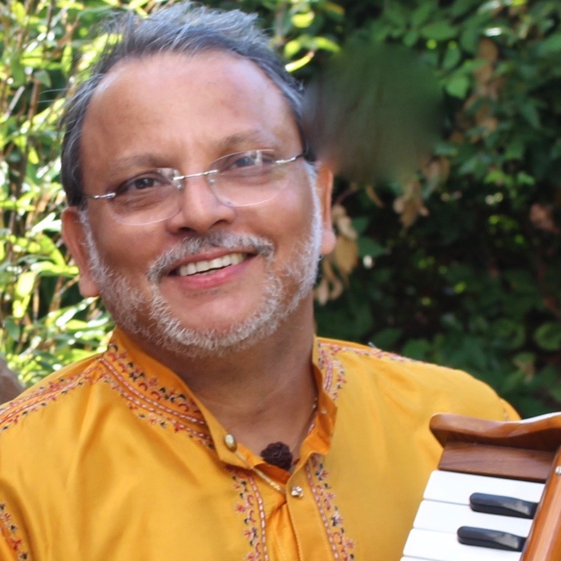

Pandit Binay Pathak’s life is in music and music fills his life
__
The subtleties of classical raag are created in Pt. Binay’s soulful interpretation of the emotional mood, the rasa-bhav, as each raag is sung. Pt Pathak’s deep musical knowledge, technical virtuosity and sensitive vocal interpretation brings the essence of each raaga alive in performance creating an extraordinary musical experience in every performance.
Pt. Pathak revealed a rare talent for music from early childhood and began his musical training at the age of six under the instruction of his father, legendary Dhrupadist and Sitarist, the late Pandit Balram Pathak. Pt. Binay was born into a music gharana dating back to legendary dhrupadist, Pandit Gopal Nayak in 16th century India. Pt. Pathak’s family is filled with extraordinarily talented musicians in a lineage spanning generations of dhrupadists, sitarists and veena players.
__
The subtleties of classical raag are created in Pt. Binay’s soulful interpretation of the emotional mood, the rasa-bhav, as each raag is sung. Pt Pathak’s deep musical knowledge, technical virtuosity and sensitive vocal interpretation brings the essence of each raaga alive in performance creating an extraordinary musical experience in every performance.
Pt. Pathak revealed a rare talent for music from early childhood and began his musical training at the age of six under the instruction of his father, legendary Dhrupadist and Sitarist, the late Pandit Balram Pathak. Pt. Binay was born into a music gharana dating back to legendary dhrupadist, Pandit Gopal Nayak in 16th century India. Pt. Pathak’s family is filled with extraordinarily talented musicians in a lineage spanning generations of dhrupadists, sitarists and veena players.

Pt. Binay’s classical training was rigorous with a daily routine of twelve to
fourteen hours of dedicated riyaz. Such was the demand of the father from his son!
Under his father’s guidance Pt. Binay studied voice, tabla, sitar and harmonium soon
excelling as a singer of Classical, Ghazal and Bhajan and composer whose original compositions
are based primarily on traditional raagas. Hearing his breathtaking harmonium solos and
mesmerizing Classical Raaga and Ghazals, audiences are spell-bound.
Pandit Binay’s ghazals are captivating in their sensuous expression of swara and laya evoking an elixir of love,
passion and poetry in the hearts of his audience.
Although he is a Science Graduate of Calcutta University,
Pt. Binay Pathak studied Hindustani Classical music in a timeless,
traditional and rigorous way in a traditional gharana. Whether performing,
composing, teaching, working in film and television or appearing on All India Radio and Television,
Pt. Binay’s life is music and music truly is his life

Music Director
Binay Pathak has established himself as a music director in films and television by composing music in Television serials, Bandish and Kabhi-Yeh-Kabhi-Woh, whose title songs were composed and sung under the direction of Pt. Binay, by Udit Narayan and Kavita Krishnamurti. He composed the music for Mangalsutra (Hindi TV serial) where Ustad Ghulam Mustafa sang Pt. Pathak’s composition, and Teen Bandhu (Bengali TV serial). Pt. Pathak has composed music for Hindi films such as Mitti, and Bengali films Dabjani and Putuler Kanna, with singer Mohammed Aziz, Mumbai, under the direction of Mukul Dutta. In the Bengali film, Rangeen Basanta, Gulam Ali, the emminent ghazal singer sang under Pt. Pathak’s direction. The Rajasthani film Kanhaiya, featured songs composed by him and sung by Shaan and Sadhana Sargam. Renowned music director, Ravindra Jain, also sang under Pt. Binay’s direction in Kanhaiya. Pt. Pathak’s film work has received accolades including an award for best music direction for the tele-film Gaanth, in Delhi.

Classical Singer
Classical Singer
As a Classical singer Pt. Binay has received accolades for his vocal Gayaki ,
Gamak, and Murki, expressed with clarity and competence in his performances
of music handed down from father to son, master to disciple,
continuously since the 16th Century. In recognition of his accomplishments
the Sursringar Samsad, Mumbai, awarded Binay Pathak the title Surmani.
An artist with All India Radio and Television,
Pt. Binay Pathak is also renowned as one of the foremost harmonium soloists and accompanists.
At a very young age he established himself by accompanying eminent artists like Pandit Bhimsen Joshi,
Pandit Jasraj, Smt Gangubai Hangal, Smt Kishori Amonkar, Pandit Kishan Maharaj, Pandit Samta Prasad,
Ustad Alla Rakha and Zakir Hussain, etc.
Touring the world, Pandit Binay Pathak’s mellifluous voice and inherent understanding of Classical music has created
a following of discerning and knowledgeable music lovers in India, Europe, Indonesia, Canada and United States.
In his tours this renowned musician has inspired people from many countries as he toured the world with his music.
Pt. Binay began touring outside of India in the 1980’s, touring Germany with his father, sitarist Pt. Balram Pathak,
as a tabla player. In the 1990’s he again toured UK, Belgium and France as a singer and harmonium soloist.
In this current decade he has appeared in India, Asia and the U.S, touring throughout the United States.
Pt. Pathak also performs and teaches as a Visiting Professor of Hindustani Classical Music with Sohini Sangeet Academy,
in Sacramento, California, USA.